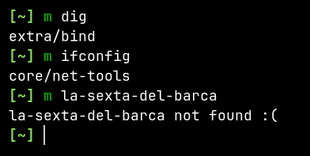
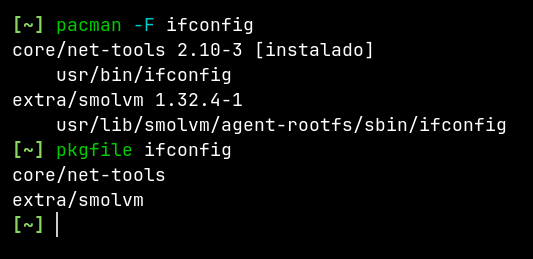

-----
Existen herramientas que ya hacen lo que hace mi tonto script, sin embargo estaba aburrido y pensé que era buena idea compartir la basura que hice.
Seguramente te ha pasado que estás aprendiendo usar una nueva herramienta en linux, y lo más probable es que dicha herramienta ya esté instalada en tu sistema, pero si eso no es así, entonces simplemente recurres a instalarla a través del gestor de paquetes de tu distribución.
Sin embargo puede ocurrir que dicho paquete no exista, por ejemplo, al querer instalar ifconfig:
pacman -S ifconfig
Mi gestor de paquetes me dice que dicho paquete no existe:
error: no se ha encontrado el paquete: ifconfig
Y razón no le falta, puesto que ifconfig es de hecho una utilidad del paquete net-tools
Y lo mismo pasa con otras herramientas, por ejemplo, dig y nslookup son parte del paquete bind.
Por lo tanto yo necesitaba una herramienta que me dijera a que paquete pertenece X herramienta que quiero instalar y usar.
Espero que hayas entendido mi punto, así que sin más rodeos, a continuación te presento y explico mi script de shell:
#!/bin/sh
output=$(curl -sL "https://man.archlinux.org/man/$1" | grep -A1 "Package name" | tail -n1 | tr "<,>" " " | awk '{print $4}')
tool=$(printf "%s" "$output" | cut -d"/" -f2)
test -n "$output" && printf "%s\n" "$output" && (printf "%s" "$tool" | xclip -sel clip) || printf "%s not found :(\n" "$1"
curl consulto el manual de la herramienta desde man.archlinux.org.grep para obtener la línea que contiene el nombre del paquete.<dt>Package name:</dt> <dd><a href="https://www.archlinux.org/packages/core/x86_64/net-tools/">core/net-tools</a></dd>
tail para quedarme solo con la última línea.tr para convertir < y > en espacios en blanco (entenderás el porque en el siguiente paso).dd a href="https://www.archlinux.org/packages/core/x86_64/net-tools/" core/net-tools /a /dd
awk para quedarme solo con la columna que contiene el nombre del paquete. Con awk podemos imprimir la X columna de un texto separado por espacios.core/net-tools
output.cut me quedo solo con la parte del nombre del nombre del paquete, quitando el nombre del repositorio. Entenderás el porque más adelante.net-tools
tool.test compruebo el contenido dentro de la variable output.output es distinto de zero o está "llena", por lo tanto imprimo por pantalla el contenido de la variable output y copio en el portapapeles el contenido de la variable tool, que contiene solo el nombre del paquete, esto me sirve para tener a "mano" el nombre del paquete por si en verdad quiero instalarlo después de hacer la consulta.output está vacío, significa que el parámetro de consulta no corresponde al nombre de una herramienta válida, y por lo tanto imprimo por pantalla: not found.Comando:
m dig
Salida:
extra/bind
Copiado en el portapapeles: bind
Captura de pantalla:

Como mencione antes, existen herramientas que ya hacen lo que hace mi tonto script, por ejemplo desde Arch Linux puedes usar:
pacman -Fpkgfile
Ya para terminar, si te preguntas el porque mi script se llama m, eso es porque soy vago, y no quise pensarlo mucho al momento de darle un nombre, además de que su uso es más rápido, ya sabes, la m viene de man, y solo tienes que escribir una letra, pero si quieres usar mi script tu puedes darle el nombre que quieras.
Por cierto, aquí te dejo algunos recursos interesantes:
Ahora si adiós, que tengo que dormir.